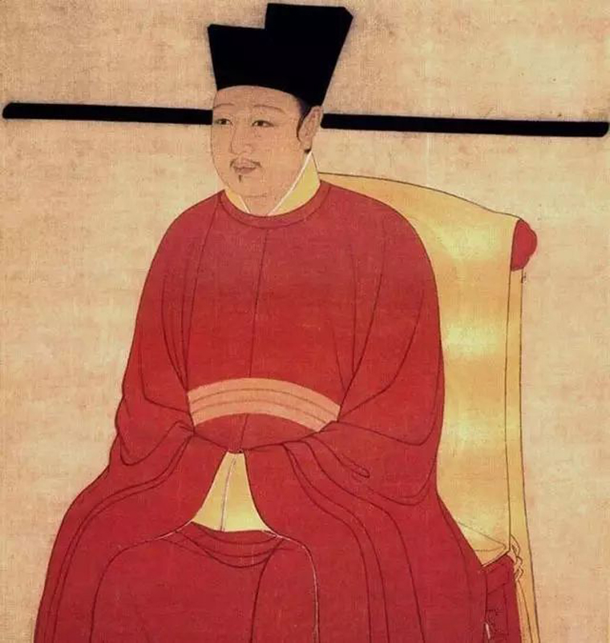
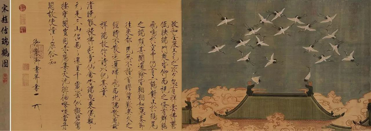
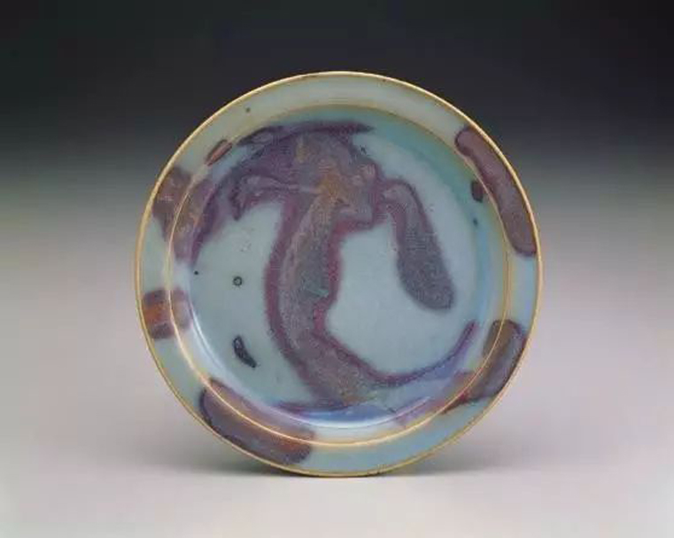
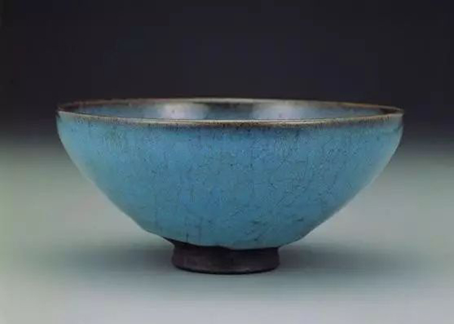
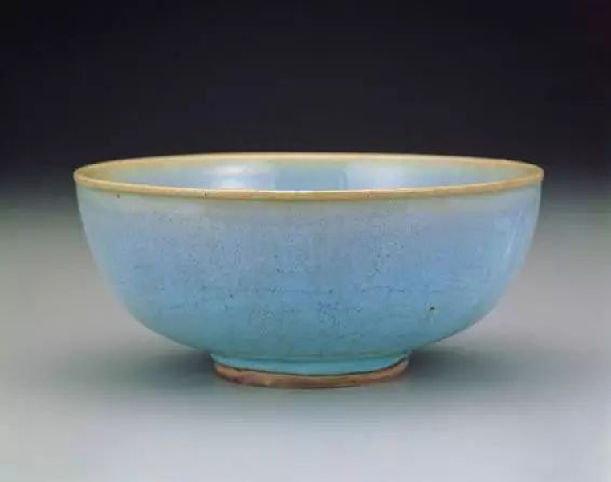

钧都
钧瓷是宋代五大名瓷之一，钧官窑也是宋代五代名窑之一，而宋钧官窑的建立和宋徽宗赵佶的性格爱好有着直接关系。
宋徽宗
历史上的宋徽宗赵佶，可算是一位多才多艺的风流皇帝，艺术天分极高，他的绘画、书法都达到了炉火纯青的高度。直到当代，他的传世书法作品仍具有感人至深的艺术魅力。赵佶应该是一位成就卓越的艺术家，却不是一位合格的政治家。他为了自己的喜好和享乐的需要，在位期间，在苏州、杭州设置“造作局”，专门采用象牙、犀角、金、玉、竹、藤、丝、绸等原料，制造各种珍奇工艺品，以供皇家赏玩。还在宫中大兴土木，修建明堂、亭台殿阁，凿池修泉。为了布置室内，装饰庭院，在平江、苏杭设“应奉局”，寻遍江南地区名贵花木、奇石异珍以奉宫廷之用，名曰“花石纲”。李辉柄认为：“由‘花石纲’之故，朝廷为了种植远路运来的奇花异草和制作怪石盆景，便在河南禹县立官钧窑，以烧制各式花盆、奁、鼓钉洗等陈设用瓷。”
宋赵佶瑞鹤图
1965年，位于禹州城北部古钧台附近的宋钧官窑遗址被发现，出土的产品，其釉色、造型与故宫博物馆所藏传世宋钧完全一致，为宋代钧官窑的存在提供了实物证据。
有人认为宋钧官窑紧邻古钧台，所以叫“钧台官窑”。这是错误的，因为北宋时期官窑附近时并没有古钧台。今天的古钧台是清康熙三十八年，经禹州知州于国壁移建的象征性建筑物。古钧台原址在城南十里的柏山上，但作为夏启建立夏王朝、举行开国大典的地方，影响力是巨大的，已经成为地方的文化标志。禹州（宋时成阳翟）境内钧台，在禹州建的官窑叫：“钧台官窑”，是合理的、成立的。钧台官窑简称“钧窑”，所产瓷器简称“钧瓷”。
 钧窑
钧窑
皇家富有四海，宋钧官窑烧制瓷器可以不计工时，不计成本，务求极精极美。所用工匠都是从民间选出来的能工巧匠，所以制品的精细程度和艺术品位都达到了前所未有的高度。
钧瓷
宋钧窑的艺术成就一方面是造型形成了雄浑大气、简洁自然的风格特征，另一方面是将窑变技艺演绎升华到了一个崭新的高度。
钧瓷
宋徽宗在位25年间，是钧瓷艺术的鼎盛时期。这时期钧官窑在民窑天青釉和紫红斑釉的基础上，成功的创烧了蓝、红、紫、青、灰诸色融合相间的窑变釉，由早期民窑的单色发展到官窑无色杂陈的基本格调。青蓝釉施于器内，红紫釉施于器外。内青外紫，对比强烈的釉面色泽具有较强的视觉效果。钧官窑的青蓝釉也不像早期民间钧釉那样单一，而是在一个较深的青蓝背景下布满乳白汗珠状的纹痕，这种现象被之为“宋钧之紫汗浸全体，青葱紫倩蜡泪之成堆。”从釉的艺术风格看，它追求的事仿玛瑙花一般的效果，或大自然中瞬息万变的自然景观。宋钧官窑釉色极为丰富，大体可分为红青两大类十余种窑变色彩。青者如天青、月白、宝石蓝、翠绿等；红者如海棠红、胭脂红、丁香紫、木兰紫等。也有诸色相间、融为一体者，不同釉色相互映照、相互渗透，别有意趣。
钧瓷
1975年，河南省博物馆考古队对禹州钧台窑遗址进行了考古发掘。同年，《河南禹县（今禹州市）钧台窑址的发掘》问世。从出土的文化遗存发现，其所烧制的器物，造型、釉色与故宫博物院所藏传世宋钧完全一致，出土的窑具、钱模，为钧台窑即北宋官窑提供了实物依据。李辉柄在《宋代官窑瓷器》中写道：“禹州钧台窑是一座官办的瓷窑。官钧窑窑址的发掘，证明宋末宫内陈设所用官钧瓷，即烧于此地。……由此证明，它是北宋末年建立起来的‘官窑’。”